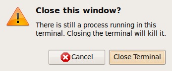
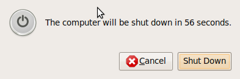
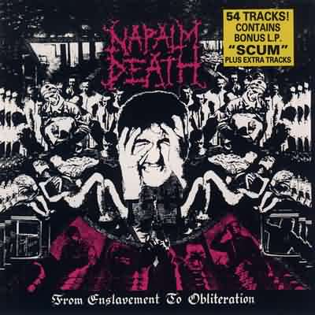
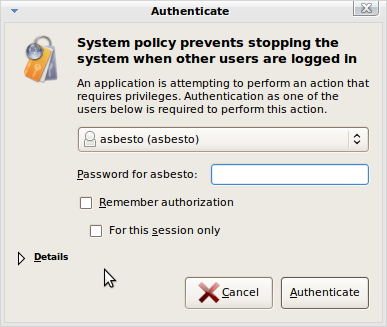
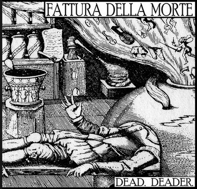

Aug 05 2009

From Enslavement to Obliteration
Chiudo il terminale? Si.
Invece no.

E STI CAZZI NON CE LI METTI? PORCO DIO, HO DETTO CHE VOGLIO CHIUDERE LA CAZZO DI FINESTRA, PORCO DI DDIO: http://ubuntuforums.org/showthread.php?t=1143627 e voglio sapere il nome del FACCIA DI MINCHIA che s’e’ inventato questa CAZZATA
Chiudo X? Ma si, dai, devo andare.
INVECE, NO: MO’ ASPETTI

Perche’, CAZZO, perche’, CAZZO, PERCHEEE’

E mo’, il MASSIMO DELLE STRONZATE, IL PARTO DI UNA TESTA DE CAZZO COLOSSALE:
Chiudo X, dai, devo andare via.
Ho i terminali aperti ma chi se ne fotte, kill esiste per questo
INVECE NO. DEVI PROVARE DOLORE:

sul MIO COMPUTER. con la MIA UTENZA. L’UNICA UTENZA del MIO laptop, nel quale SONO GIA’ LOGGATO.

Programmatore STRONZO. Ogni qual volta la tua testa de cazzo piena di merda venisse attraversata da IDEE DEL CAZZO COME QUESTE, CHE TU POSSA VENIRE COLPITO DALLA FATTURA DELLA MORTE.